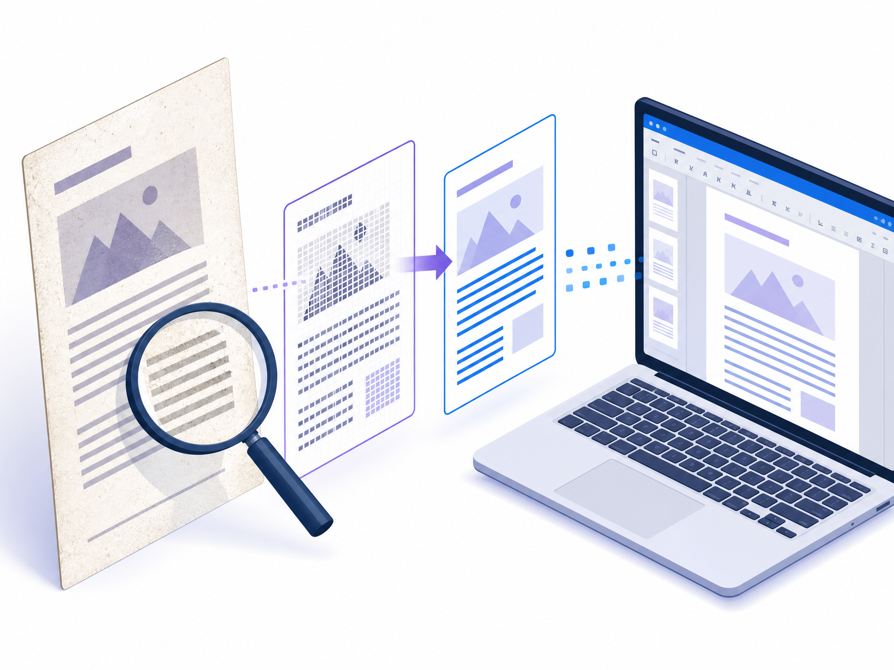

أولاً: عرف نوع PDF ديالك
PDF نصي: تقدر تحدد الكلام بالماوس وتنسخو، وغالباً كيتحول بنتيجة مزيانة. PDF سكانير: الصفحة عبارة عن صورة وما تقدرش تحدد النص؛ هنا خاص تقنية OCR باش يتعرف البرنامج على الحروف.
مقارنة سريعة
1. Adobe Acrobat Online
Adobe PDF to Word مناسب للتحويل السريع بلا تثبيت برنامج. ضغط على Select a file، اختار PDF، تسنى التحويل وحمل DOCX. كيدعم OCR فالحالات المناسبة، ولكن الجودة كتعلق بالـscan واللغة والجداول.
- دخل للأداة الرسمية.
- رفع ملف PDF.
- حمل Word.
- راجع النص والتنسيق قبل الاستعمال.
2. Google Drive وGoogle Docs
رفع PDF لـGoogle Drive، كليك يمين، Open with ثم Google Docs. من بعد اختار File ثم Download ثم Microsoft Word (.docx). هاد الطريقة مناسبة للفقرات العادية، ولكن الأعمدة والصور والحواشي ممكن يتبدلو.
3. Microsoft Word
من Word اختار Open وحدد PDF، وافق على تحويل نسخة قابلة للتعديل، ومن بعد Save As بصيغة DOCX. كينجح أكثر مع النص العادي، وأقل مع PDF سكانير والتصميمات المعقدة.
4. iLovePDF
iLovePDF سريع وسهل وكيجمع أدوات الدمج، الضغط والتقسيم. حيت الملف كيرفع لخدمة online، ما تستعملوش مع عقد أو CIN أو معلومات صحية إلا كنت فاهم سياسة الخدمة.

5. Smallpdf وXodo
Smallpdf وXodo بدائل للتحويل وOCR. قبل تعتمد النتيجة، جرب صفحة وحدة وقارن الفقرات، العربية، الجداول والصور.
6. LibreOffice Draw للوثائق الحساسة
إلى ما بغيتيش ترفع الملف للإنترنت، جرب LibreOffice Draw. افتح PDF محلياً، عدل العناصر قدر الإمكان، ثم انسخ المحتوى لـWriter وحفظو DOCX. الخصوصية أحسن، لكن PDF المعقد ممكن يفتح كعناصر متفرقة.
كيفاش تحول PDF سكانير بـOCR؟
- اختار Adobe أو Xodo أو Smallpdf اللي عندها OCR.
- حدد اللغة إذا كانت متاحة.
- استعمل scan واضح ومستقيم.
- حول الملف لـWord.
- راجع الحروف والأرقام واتجاه العربية.
- قارن كل فقرة بالصورة الأصلية.
علاش كيتبدل التنسيق؟
PDF مصمم يحافظ على شكل الصفحة، ماشي بالضرورة على بنية سهلة للتحرير. أثناء التحويل ممكن الأعمدة تتخلط، الجداول تولي نص، الصور تتحرك والخطوط تتبدل. من بعد التحويل راجع العناوين، المسافات، page breaks والجداول.
اختار الطريقة حسب الحالة
نصائح الخصوصية
- ما ترفعش عقود، CIN، ملفات طبية أو بيانات الزبناء بلا سبب.
- خدم على نسخة من الملف وحيد المعلومات غير الضرورية.
- راجع سياسة الخصوصية وشروط الاستخدام.
- حمل الأدوات من الموقع الرسمي وتجنب البرامج المقرصنة.
- مسح الملفات من Downloads ومن الخدمة إذا كان الخيار متوفر.
الخلاصة
إلى بغيتي السرعة، بدا بـAdobe. إلى عندك Google Drive، Google Docs حل سهل للملفات النصية. PDF السكانير خاصو OCR، والوثيقة الحساسة الأفضل تبقى فالجهاز باستعمال LibreOffice. بعد أي تحويل، فتح Word وراجع النص، الجداول، الصور، العربية والأرقام قبل الإرسال.
اختار الأداة حسب نوع الملف والخصوصية ديالو، ماشي غير حسب السرعة.